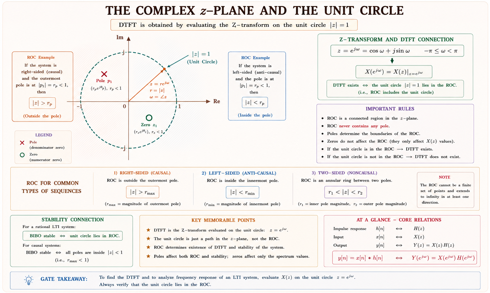
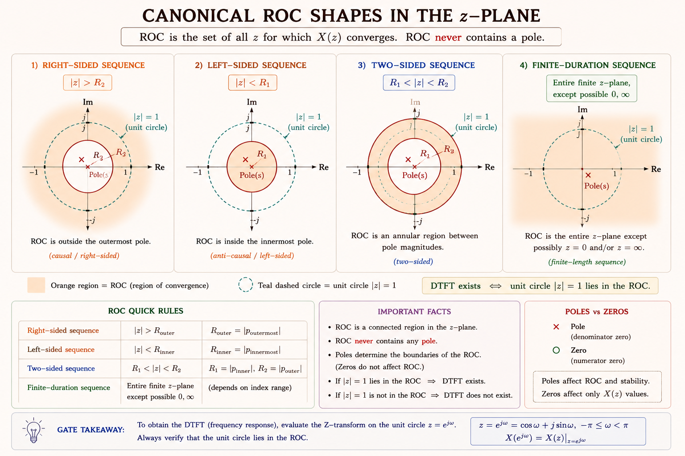
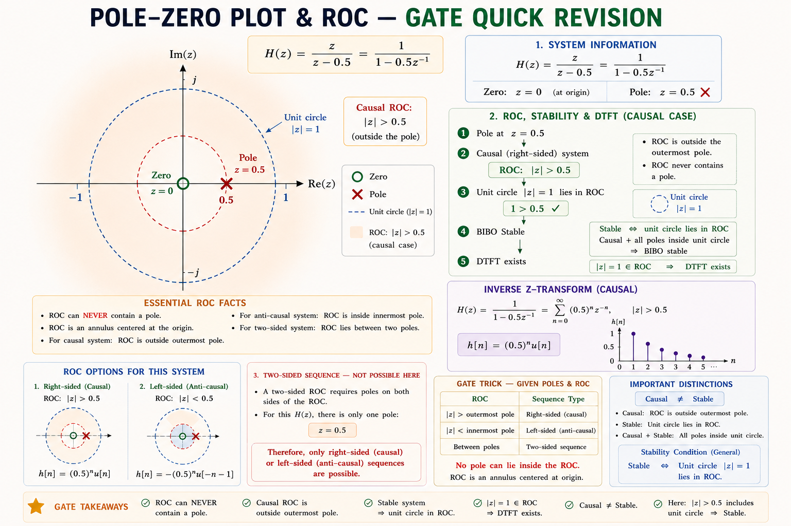
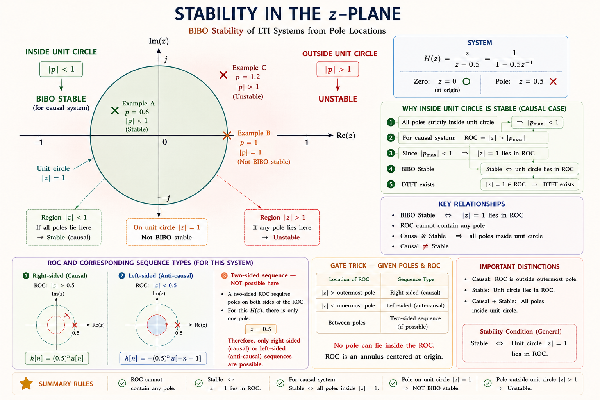

Bilateral and unilateral Z-transform, Region of Convergence (ROC), inverse Z-transform by partial fractions and power series, pole-zero plots, system stability and causality — complete GATE, IES & PSU coverage with full derivations, visualisations, and solved examples from standard textbooks.
The Z-transform is to discrete-time systems what the Laplace transform is to continuous-time systems. It converts a difference equation into an algebraic equation — making analysis, design, and stability testing tractable.
Consider an engineer designing a digital filter for a smartphone. The filter processes audio samples at 44 100 samples per second. Writing the behaviour as a difference equation is straightforward, but solving it in closed form — especially for complicated recursive structures — is extremely difficult. The Z-transform converts that difference equation into a polynomial equation in the complex variable \(z\), which can be solved with ordinary algebra.[1]
The DTFT (Chapter 9) already connects the time domain to the frequency domain for discrete signals. But the DTFT only exists when the sequence is absolutely summable — it fails for signals like \(u[n]\) (unit step) or growing exponentials. The Z-transform generalises the DTFT by introducing a complex variable \(z = re^{j\omega}\), where the radius \(r\) provides a convergence factor that tames divergent sums.[2]
Z-transform links to: Laplace transform (replace \(s \to \ln z / T\)), DTFT (set \(z = e^{j\omega}\)), difference equations (convert to algebraic), and digital control (pulse-transfer functions). Mastering Z-transform unifies all of DSP.
Start with the Discrete-Time Fourier Transform (DTFT):
This converges only if \(\sum|x[n]| < \infty\). To handle broader classes of signals, multiply \(x[n]\) by a real convergence factor \(r^{-n}\) where \(r> 0\):
Define the complex variable \(\boxed{z \triangleq r\,e^{j\omega}}\). Then the sum becomes the Bilateral (Two-Sided) Z-Transform:[1]
\(|z| = r\) is the radial coordinate in the complex plane — it controls convergence. \(\angle z = \omega\) is the normalised angular frequency. When \(|z|=1\) (the unit circle), \(X(z)\big|_{z=e^{j\omega}} = X(e^{j\omega})\), recovering the DTFT.

The bilateral Z-transform pair is written as:
The inverse Z-transform uses the contour integral (Bromwich integral) in the complex z-plane:
where \(\mathcal{C}\) is a counter-clockwise closed contour lying within the ROC. In practice, this is evaluated using partial fractions or the power series method (Section 10.7).
The ROC is not optional. Two different sequences can have the same algebraic expression for \(X(z)\) but different ROCs — and represent completely different signals. The Z-transform is only fully specified when both \(X(z)\) and its ROC are stated together.
The ROC is the set of all values of \(z\) in the complex plane for which the Z-transform sum converges absolutely:
Since convergence depends only on \(|z|\), the ROC is always a ring (annular region) in the z-plane: \(R_1 < |z| < R_2\).[1]
| # | Property | Explanation | GATE Weight |
|---|---|---|---|
| R1 | ROC is an annular ring \(R_1 < |z| < R_2\) | May include \(|z|=0\) or \(|z|=\infty\) as limiting cases | 🟢 HIGH |
| R2 | ROC contains no poles | At a pole, \(X(z) \to \infty\), so sum diverges | 🟢 HIGH |
| R3 | Finite-duration sequence: ROC is entire z-plane | Except possibly \(z=0\) or \(z=\infty\) depending on sequence extent | 🟢 HIGH |
| R4 | Right-sided sequence: ROC is \(|z| > R_1\) (exterior of a circle) | Includes \(z=\infty\) if sequence starts at \(n \geq 0\) | 🟢 HIGH |
| R5 | Left-sided sequence: ROC is \(|z| < R_2\) (interior of a circle) | Includes \(z=0\) if sequence ends at \(n \leq 0\) | 🟡 MED |
| R6 | Two-sided sequence: ROC is an open annular ring | Inner radius set by left-sided part, outer by right-sided part | 🟡 MED |
| R7 | If ROC includes unit circle → DTFT exists | Necessary & sufficient condition for DTFT convergence | 🟢 HIGH |

If you know the signal is causal (right-sided, starts at \(n=0\)), choose the ROC \(|z| > |a|\) for the term \(a^n u[n]\). If the signal is anti-causal (left-sided), choose \(|z| < |a|\) for the term \(-a^n u[-n-1]\). Both give the same \(X(z)\) algebraically — but different ROCs mean different signals!
The unilateral Z-transform sums only from \(n=0\) to \(+\infty\), making it the discrete-time analogue of the one-sided Laplace transform:[3]
| Feature | Bilateral | Unilateral |
|---|---|---|
| Summation limits | \(-\infty\) to \(+\infty\) | \(0\) to \(+\infty\) |
| Handles non-causal signals? | Yes | No |
| Initial conditions | Cannot handle directly | Naturally included |
| Solving difference equations with ICs | Indirect | Direct |
| System analysis | General | Causal systems only |
| ROC | Annular ring (general) | Always exterior disk \(|z|>R\) |
This is the most important property of the unilateral Z-transform for solving difference equations with initial conditions:
Here \(x[0], x[-1]\) are the initial conditions. These are automatically embedded — no extra work needed.
Use the bilateral Z-transform for general signal and system analysis, ROC questions, and stability. Use the unilateral Z-transform when solving recursive difference equations with given initial conditions — it is the discrete analogue of the Laplace transform method for ODEs.
| Property | Time Domain | Z-Domain | ROC | GATE |
|---|---|---|---|---|
| Linearity | \(ax[n]+by[n]\) | \(aX(z)+bY(z)\) | \(\supseteq R_x \cap R_y\) | 🟢 |
| Time shifting | \(x[n-k]\) | \(z^{-k} X(z)\) | Same (excl. \(z=0,\infty\)) | 🟢 |
| Scaling in z (exponential) | \(a^n x[n]\) | \(X(z/a)\) | \(|a| R_1 < |z| < |a| R_2\) | 🟢 |
| Time reversal | \(x[-n]\) | \(X(1/z)\) | \(1/R_2 < |z| < 1/R_1\) | 🟡 |
| Differentiation in z | \(n\,x[n]\) | \(-z\,\dfrac{dX(z)}{dz}\) | Same as \(R_x\) | 🟢 |
| Convolution | \(x[n]*y[n]\) | \(X(z)\cdot Y(z)\) | \(\supseteq R_x \cap R_y\) | 🟢 |
| Correlation | \(R_{xy}[n]\) | \(X(z)\cdot Y(1/z^*)\big|_{z^*}\) | — | 🔴 |
| Initial value theorem | \(x[0]\) | \(\lim_{z\to\infty} X(z)\) | — | 🟢 |
| Final value theorem | \(\lim_{n\to\infty} x[n]\) | \(\lim_{z\to 1}(z-1)X(z)\) | Poles inside unit circle | 🟢 |
The final value theorem \(x[\infty] = \lim_{z\to1}(z-1)X(z)\) is valid only if all poles of \((z-1)X(z)\) lie strictly inside the unit circle. If there is a pole on or outside the unit circle, the sequence diverges and the theorem does not apply.
| # | Sequence \(x[n]\) | Z-Transform \(X(z)\) | ROC | GATE |
|---|---|---|---|---|
| 1 | \(\delta[n]\) | \(1\) | All \(z\) | 🟢 |
| 2 | \(\delta[n-k]\) | \(z^{-k}\) | \(z \neq 0\) (\(k>0\)) | 🟢 |
| 3 | \(u[n]\) | \(\dfrac{z}{z-1} = \dfrac{1}{1-z^{-1}}\) | \(|z|>1\) | 🟢 |
| 4 | \(a^n u[n]\) | \(\dfrac{z}{z-a} = \dfrac{1}{1-az^{-1}}\) | \(|z|>|a|\) | 🟢 |
| 5 | \(-a^n u[-n-1]\) | \(\dfrac{z}{z-a}\) | \(|z|<|a|\) | 🟢 |
| 6 | \(n\,a^n u[n]\) | \(\dfrac{az}{(z-a)^2}\) | \(|z|>|a|\) | 🟢 |
| 7 | \(n\,u[n]\) | \(\dfrac{z}{(z-1)^2}\) | \(|z|>1\) | 🟢 |
| 8 | \(\cos(\omega_0 n)\,u[n]\) | \(\dfrac{z(z-\cos\omega_0)}{z^2 - 2z\cos\omega_0 + 1}\) | \(|z|>1\) | 🟡 |
| 9 | \(\sin(\omega_0 n)\,u[n]\) | \(\dfrac{z\sin\omega_0}{z^2 - 2z\cos\omega_0 + 1}\) | \(|z|>1\) | 🟡 |
| 10 | \(r^n\cos(\omega_0 n)\,u[n]\) | \(\dfrac{z^2 - rz\cos\omega_0}{z^2 - 2rz\cos\omega_0 + r^2}\) | \(|z|>r\) | 🔴 |
Both \(a^n u[n]\) and \(-a^n u[-n-1]\) have the same \(X(z) = \tfrac{z}{z-a}\). The ROC tells them apart: causal → outside (\(|z|>|a|\)), anti-causal → inside (\(|z|<|a|\)). GATE frequently exploits this ambiguity.
Three practical methods are used in GATE and engineering practice:[1,2]
This is the most frequently examined method. The key is to expand \(X(z)/z\) (not \(X(z)\)) into partial fractions, then multiply back by \(z\) to match known Z-transform pairs.
Most Z-transform pairs have the form \(\tfrac{z}{z-a}\). Dividing by \(z\) gives \(\tfrac{1}{z-a}\), which has simple partial fractions. After expansion, multiply both sides by \(z\) to get terms like \(\tfrac{Az}{z-a} \leftrightarrow A\,a^n u[n]\).
Procedure:
Express \(X(z)\) as a power series in \(z^{-1}\) by polynomial long division. The coefficient of \(z^{-n}\) is \(x[n]\).
This method gives \(x[n]\) sample by sample — useful when a closed-form expression is not needed, or when GATE asks for the first few terms.
Simply match \(X(z)\) to a known pair in the Z-transform table. Combined with the scaling property \(a^n x[n] \leftrightarrow X(z/a)\), this handles the majority of GATE inverse Z-transform questions in under 30 seconds.
For a rational Z-transform \(X(z) = \tfrac{N(z)}{D(z)}\), the zeros are the roots of \(N(z)=0\) and the poles are the roots of \(D(z)=0\). The pole-zero plot is a graphical representation in the z-plane.[1]
Where \(z_k\) are zeros (marked ○) and \(p_k\) are poles (marked ×) in the z-plane.

The frequency response \(H(e^{j\omega})\) is obtained by evaluating \(H(z)\) on the unit circle \(z = e^{j\omega}\). Geometrically:
\(|H(e^{j\omega})| = K \cdot \dfrac{\text{product of distances from } e^{j\omega} \text{ to all zeros}}{\text{product of distances from } e^{j\omega} \text{ to all poles}}\). When \(e^{j\omega}\) sweeps the unit circle, the frequency response rises near zeros of the denominator (poles) and dips near zeros of the numerator.
A discrete-time LTI system with impulse response \(h[n]\) is BIBO stable if and only if \(\sum_{n=-\infty}^{\infty}|h[n]| < \infty\), which is precisely the condition that the DTFT of \(h[n]\) exists — i.e., the unit circle lies inside the ROC of \(H(z)\).[1]
For a causal system (ROC: \(|z| > R\)), this simplifies to: the system is stable if and only if all poles lie strictly inside the unit circle (\(|p_k| < 1\) for all poles \(p_k\)).
An LTI system is causal if \(h[n]=0\) for \(n<0\). In the Z-domain:
| Pole Location | Causal System | Non-Causal (Two-sided) |
|---|---|---|
| All poles inside unit circle | Stable ✓ | Stable ✓ |
| Any pole outside unit circle | Unstable ✗ | May be stable (if outside ROC) |
| Pole on unit circle (simple) | Marginally stable | Marginally stable |
| Repeated pole on unit circle | Unstable ✗ | Unstable ✗ |

For a non-causal system, a pole outside the unit circle does not necessarily mean instability — if the ROC is \(|z|<|p|\) (left-sided), the unit circle could still be in the ROC. Always check whether the unit circle is inside the ROC, not just the pole positions.
GATE consistently tests the relationship between ROC and signal type. A typical question gives \(X(z) = \tfrac{z}{(z-\frac{1}{2})(z-2)}\) and asks for the causal, stable, or two-sided inverse. The algebraic expression is the same — only the ROC changes the answer. Memorise: causal → exterior ROC; stable → unit circle inside ROC.
The Z-transform of a sequence \(x[n]\) is \(X(z) = \dfrac{1}{1 - \frac{1}{4}z^{-1}}\). If \(x[n]\) is a causal sequence, then \(x[1] =\)
Solution: For causal sequence, ROC: \(|z| > 1/4\). \(X(z) = \tfrac{z}{z - 1/4} = \tfrac{1}{1-(1/4)z^{-1}}\). Using pair 4: \(x[n] = (1/4)^n u[n]\). So \(x[1] = 1/4\). Alternatively use initial value theorem: \(x[0] = \lim_{z\to\infty} X(z) = 1\), then power series: \(X(z) = 1 + \tfrac{1}{4}z^{-1} + \cdots\) gives \(x[1] = 1/4\).
A causal LTI system has the transfer function \(H(z) = \dfrac{z}{z^2 - 0.5z + 0.0625}\). The system is:
Solution: Denominator: \(z^2 - 0.5z + 0.0625 = (z-0.25)^2\). Poles at \(z = 0.25\) (repeated). Since \(|0.25| = 0.25 < 1\), both poles are inside the unit circle. Causal system → ROC: \(|z|>0.25\). Unit circle is inside ROC. Therefore: stable and causal.
A discrete-time system has \(Y(z) = \dfrac{z}{(z-1)(z-0.5)}\). The steady-state output \(y[\infty]\) is:
Solution: Apply final value theorem: \(y[\infty] = \lim_{z\to1}(z-1)Y(z) = \lim_{z\to1} \tfrac{z}{z-0.5} = \tfrac{1}{0.5} = 2\). Condition check: \((z-1)Y(z) = \tfrac{z}{z-0.5}\) has a pole at \(z=0.5\) which is inside the unit circle ✓. FVT is valid.
If \(\mathcal{Z}\{x[n]\} = X(z)\) with ROC \(R\), then \(\mathcal{Z}\{n\cdot x[n]\)\) equals:
Solution: Differentiate \(X(z) = \sum x[n]z^{-n}\) with respect to \(z\): \(\tfrac{dX}{dz} = \sum x[n](-n)z^{-n-1} = -\tfrac{1}{z}\sum n\,x[n]z^{-n}\). Multiply both sides by \(-z\): \(-z\tfrac{dX}{dz} = \sum n\,x[n]z^{-n} = \mathcal{Z}\{n\cdot x[n]\}\). Answer: (A).
Step 1: Divide by z
Step 2: Find residues
Step 3: Multiply by z
Step 4: Apply ROC \(1 < |z| < 2\)
This is a two-sided ROC (annular ring). The pole at \(z=1\) is inside the ROC boundary, so the corresponding term \(\tfrac{-z}{z-1}\) corresponds to a right-sided (causal) component. The pole at \(z=2\) is outside the ROC, so \(\tfrac{2z}{z-2}\) corresponds to a left-sided (anti-causal) component.
Final Answer:
This is a two-sided (non-causal) signal. Note that the same \(X(z)\) with ROC \(|z|>2\) would give a completely different causal signal!
Divide \((1+2z^{-1})\) by \((1-\tfrac{1}{2}z^{-1})\):
Reading off coefficients:
Verify using closed form: \(X(z) = \tfrac{1+2z^{-1}}{1-\frac{1}{2}z^{-1}}\). Using unilateral Z-transform properties one can show \(x[n] = (1/2)^n u[n] + 2\cdot(1/2)^{n-1}u[n-1]\). At \(n=0\): \(x[0]=1\). At \(n=1\): \(x[1] = 1/2 + 2 = 5/2\). ✓
Step 1: Take unilateral Z-transform of both sides
Step 2: Substitute \(y[-1]=2\)
Step 3: Solve for Y(z)
Step 4: Partial fractions → \(Y(z)/z = \dfrac{A}{z-1} + \dfrac{B}{z-1/2}\)
Final Answer:
The initial condition's effect and the forced response combine to give a clean step response of amplitude 2.
Writing \(\mathcal{Z}\{a^n u[n]\} = \tfrac{z}{z-a}\) without specifying ROC: \(|z|>|a|\). The same \(X(z)\) with ROC \(|z|<|a|\) gives \(-a^n u[-n-1]\). In GATE, not specifying ROC can mean choosing the wrong inverse.
Students often do partial fractions on \(X(z)\) directly instead of \(X(z)/z\). This leads to incorrect residues because the standard pairs are of the form \(z/(z-a)\), not \(1/(z-a)\). Always compute PFE of \(X(z)/z\) first, then multiply through by \(z\).
The Final Value Theorem requires ALL poles of \((z-1)X(z)\) to be strictly inside the unit circle. If \(X(z)\) has poles at \(z=1\) (other than the one cancelled by \((z-1)\)), FVT is invalid. Applying it anyway gives a wrong numerical answer — a classic GATE 1-mark trap.
\(\mathcal{Z}\{n\,u[n]\} = \tfrac{z}{(z-1)^2}\) but \(\mathcal{Z}\{n\,a^n u[n]\} = \tfrac{az}{(z-a)^2}\) (not \(\tfrac{z}{(z-a)^2}\)). The extra factor of \(a\) in the numerator is commonly missed, leading to incorrect partial fraction results.
For a non-causal system, a pole outside the unit circle does NOT automatically mean instability. If the ROC is the interior region \(|z|<|p|\) and the unit circle lies inside this ROC, the system is stable. Always map the ROC first, then check if the unit circle lies within it.
Causal → exterior circle. Overall convergence = no poles inside. Right-sided → outside disk. Entire plane → finite-duration. Say it: "CORE of the z-plane".
In partial fractions, always divide X(z) by z first. Visualise: you are "lending a z" to the denominator so it matches the standard table pair z/(z−a). After finding residues A, B,…, give back the z: multiply both sides by z again.
For causal systems, think of the unit circle as a "city wall". Poles inside the wall are stable citizens. Poles outside the wall are rebels — unstable! This works perfectly for causal discrete-time control systems.
Imagine two people with the same face (same \(X(z)\)) but living in different cities (different ROC). \(a^n u[n]\) lives outside \(|z|=|a|\). \(-a^n u[-n-1]\) lives inside \(|z|=|a|\). The address (ROC) is what makes them different people.
Ask any question about Z-transforms, ROC, inverse methods, stability, or past GATE questions.
\(X(z)=\sum x[n]z^{-n}\). Inverse via PFE of \(X(z)/z\), then multiply by \(z\). Power series reads off samples directly.
Annular ring, no poles inside. Right-sided → exterior. Left-sided → interior. Finite duration → entire plane. Unit circle in ROC → DTFT exists.
\(a^n u[n] \leftrightarrow \tfrac{z}{z-a}\) (\(|z|>|a|\)). \(-a^nu[-n-1]\leftrightarrow\tfrac{z}{z-a}\) (\(|z|<|a|\)). \(nu[n]\leftrightarrow\tfrac{z}{(z-1)^2}\).
All poles strictly inside unit circle (\(|p_k|<1\)) → BIBO stable. Pole on unit circle → marginal. Outside → unstable.
\(x[0]=\lim_{z\to\infty}X(z)\). \(x[\infty]=\lim_{z\to1}(z-1)X(z)\) — only if poles of \((z-1)X(z)\) are inside unit circle.
Solve difference equations with initial conditions. Time shift: \(\mathcal{Z}\{x[n-1]\}=z^{-1}X+x[-1]\). ROC always exterior.
State-Space Representation — discrete and continuous-time state equations, observability, controllability, transfer function from state space, and GATE-focused analysis of MIMO systems and stability via eigenvalues.
All technical content derives from the following standard textbooks. All explanations, derivations, diagrams, and worked examples are original to Aarova AI.